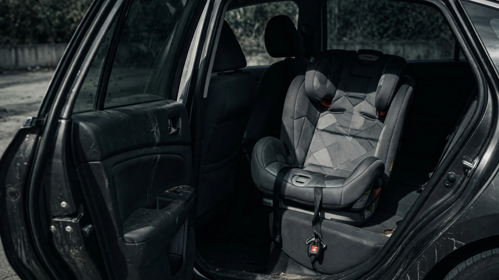

Evenflo Has Recalled the Same Seat Design Four Times. Forty-Four Toddlers Died Without Any Seat at All.

Evenflo just recalled another 59,661 child car seats. It's the Reo by Revolve360 this time. Same underlying issue as the last three rounds: the headrest can shift during crash testing when it's cranked to the highest adjustment positions. Positions 10 and 11 out of 11. NHTSA dutifully filed the paperwork. No injuries reported.[1] No injuries have ever been reported from this defect across four separate recalls.
Four recalls. Zero injuries. Meanwhile, NHTSA's own 2024 FARS annual data landed in April, and buried inside the child occupant tables is a number that should end careers: 38% of toddlers killed in traffic crashes in 2024 weren't in any restraint at all.[2] That's up from 26% the year before. Not a rounding error. A twelve-point swing in the wrong direction while every other age group got better.
Read that again. School-age kids (4–8) dropped from 35% unrestrained to 28%. Tweens (9–12) dropped from 45% to 30%. Infants held roughly steady. But the 1-to-3-year-olds? The exact population that Evenflo's Revolve360 is engineered to protect? Their unrestrained death count climbed 22%, from 36 to 44, even as total toddler crash deaths fell from 141 to 116.
So the denominator shrank and the numerator grew. Fewer toddlers are dying in crashes overall. A larger share of the ones who do die had nothing protecting them. Industry response: recall 60,000 seats for a headrest that might wobble in a position most two-year-olds will never reach.
NHTSA estimates that car seats reduce fatal injury risk by 71% for infants and 54% for toddlers.[3] Those numbers have been gospel for two decades. They mean each of those 44 unrestrained toddlers had roughly a coin-flip chance of surviving if they'd been buckled into any seat at all. Not the Revolve360. Not the one with the correct headrest detent. Any seat. The cheap one from Walmart. The hand-me-down from 2019. The one still in the box because nobody showed the parent how the LATCH clips work.
Fair counterargument, and it writes itself: recalls are a regulatory function, not a choice. Evenflo can't skip a recall because misuse kills more kids. NHTSA's job is to catch manufacturing defects; persuading parents to use car seats is a different agency's problem with a different budget. Both should happen simultaneously.
Fine. But resource allocation is a choice. Evenflo has now run four separate recall logistics campaigns for the Revolve360 family. Each one costs engineering hours, legal review, mailing campaigns, and dealer coordination. Each one generates a NHTSA press release that parents briefly panic about before going back to not installing the seat they already own. Federal child passenger safety education? About $7.5 million a year, spread across every state.[4]
In 1985, 71% of fatally injured children were unrestrained. By 2024, that number is 30%.[2] Enormous progress. Forty years of it. But the toddler regression in 2024 suggests the easy gains are spent. The remaining 30% are the hard cases: poverty, addiction, inadequate education, the specific chaos of managing three kids under five in a sedan with the wrong anchor points. No recall campaign fixes that. No headrest detent position prevents it.
550 children under 13 died in vehicles in 2024. If you could magically fix every Evenflo headrest in America, you'd save exactly zero of them. If you could magically get every toddler into a seat, the math says you'd save roughly 24.
Got a car seat in the closet you stopped using? Check your VIN and seat model at nhtsa.gov/recalls. If it's clear, give it to someone who needs it. If you're buying new, skip the $400 rotating base and get a $60 convertible that actually gets installed. And if you know a parent juggling three kids under five in a sedan? Offer to help them figure out the LATCH system. That does more than any headrest detent ever will.
Sources & References
- NHTSA Recall Notice, Evenflo Reo by Revolve360, July 2026. 59,661 units. Six US model numbers affected. nhtsa.gov/recalls
- IIHS, Fatality Statistics: Children, 2024 FARS data. Restraint use among fatally injured children by age. iihs.org
- NHTSA, Seat Belts and Child Restraints, Kahane (2015) effectiveness estimates. nhtsa.gov
- NSC Injury Facts, Child Restraint, 2024 data. 550 child occupants under 13 died; 167 unrestrained. injuryfacts.nsc.org
Source: NHTSA FARS 2024 annual file, IIHS fatality statistics 2023–2024, NHTSA recall database. Year-to-year fluctuations in small samples (N=116 toddler deaths) can be noisy; the 2023–2024 toddler regression may partially reflect random variation. The Evenflo recall is for a newer product line (Reo) distinct from the original Revolve360, though the underlying headrest design issue is the same. “Unrestrained” in FARS includes both no restraint at all and incorrect installation. See methodology for caveats.